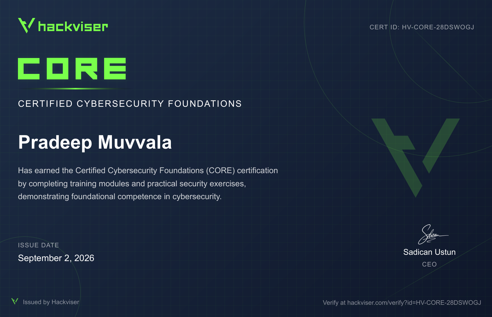

SOC Operations
Security alert triage, investigation workflows, incident documentation and SOC fundamentals.
Cybersecurity Graduate · SOC / Blue Team · Incident Response
Cybersecurity graduate building practical skills through hands-on investigations, security labs, technical research, and continuous learning.
I am a cybersecurity graduate with a strong interest in Security Operations (SOC), Blue Team operations, incident response, threat intelligence, digital forensics, malware analysis, and penetration testing.
I build my skills through hands-on labs, security investigations, technical research, and practical learning. I enjoy understanding how security incidents are detected, investigated, analyzed, and responded to.
I am currently a fresher looking for opportunities to start my career in cybersecurity, contribute to a security team, and continue developing through real-world experience.
Security alert triage, investigation workflows, incident documentation and SOC fundamentals.
Investigating suspicious activity, analyzing evidence, understanding attack activity and documenting findings.
IOC research, OSINT, threat enrichment and understanding threat context.
Digital forensics concepts, log analysis, evidence examination and investigation methodology.
Security monitoring, log analysis, detection concepts and SIEM investigation workflows.
Phishing analysis, suspicious activity investigation, malware analysis concepts and cybersecurity research.
SSH log analysis and brute-force detection using Python and Linux authentication logs.
Python · Linux · SSH · Log Analysis
View on GitHub ↗Live network traffic capture and protocol analysis using Python and Scapy.
Python · Scapy · TCP · UDP · ICMP
View on GitHub ↗Port scanning and exposed-service identification across ports 1–1024 using Python.
Python · Socket · Port Scanning · Network Security
View on GitHub ↗Hands-on cybersecurity learning through practical security exercises, simulations and foundational security training.
Certified Cybersecurity Foundations (CORE)
Practicing SOC operations through security alerts, investigations, incident analysis and defensive security scenarios.
SOC Analyst Learning Path · Currently Learning
Hands-on security investigations documented as I complete them.
Phishing investigation · email analysis · malicious attachment analysis
Phishing analysis · OSINT · IOC enrichment

Hackviser — Completed hands-on cybersecurity training modules and practical security exercises.
Issued: September 2, 2026 · Cert ID: HV-CORE-28DSWOGJ
View Certificate ↗Completed a 10-week Networking Virtual Internship supported by Zscaler through the AICTE–EduSkills program.
Duration: October – December 2024
View Certificate ↗A one-page overview of my cybersecurity skills, hands-on projects, practical experience and certifications.
I am currently looking for opportunities to start my career in cybersecurity and am open to internships, entry-level roles, projects and professional connections.